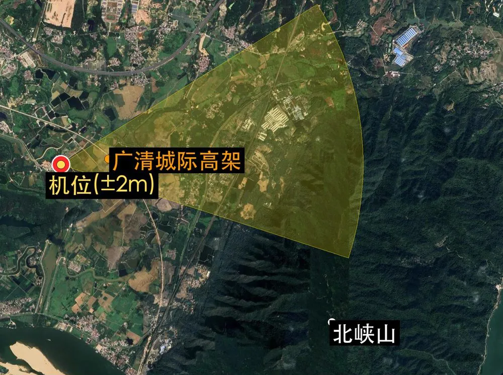

Где снято фото: проверка
Узнай, что твоё фото выдаёт о месте, до того как выложишь
Шаги ниже подстроятся под твой выбор
Что понадобится
- Компьютер на Windows 10, 11 или Mac
- Claude Code. Он есть в подписке Claude Pro и выше, на бесплатном тарифе его нет
- Codex. Хватит любого аккаунта ChatGPT, даже бесплатного
- Оригинал фото с телефона, а не скриншот: скиллу нужны детали
- Время: полная проверка идёт около часа. В примерах автора скилла от 32 до 72 минут
- Сам скилл geo-sleuth бесплатный, лицензия MIT
Шаг 1 из 4
Поставь Node.js и uv
- Открой PowerShell: нажми Пуск и набери «PowerShell»
- Открой Терминал: Cmd + Пробел и набери «Терминал»
- Вставь по очереди две команды. Node.js нужен установщику скилла, uv запускает его скрипты
Node.js
winget install --id OpenJS.NodeJS.LTS -ebrew install nodeЕсли пишет «command not found: brew», скачай установщик для Mac на nodejs.org
uv
winget install --id=astral-sh.uv -ecurl -LsSf https://astral.sh/uv/install.sh | shПроверка: закрой терминал и открой заново
node -vv26.13.1. Подойдёт любая версия от 22.20uv --versionuv 0.13.8. Цифры могут быть другимиШаг 2 из 4
Поставь скилл
- В том же терминале вставь команду
npx.cmd skills add Oldcircle/geo-sleuth -g -a claude-code -ynpx skills add Oldcircle/geo-sleuth -g -a claude-code -ynpx.cmd skills add Oldcircle/geo-sleuth -g -a codex -ynpx skills add Oldcircle/geo-sleuth -g -a codex -ynpx.cmd: так команда сработает в PowerShell без лишних настроекInstalled 1 skill и Done!Потом открой новый чат в Claude CodeПотом закрой и снова открой Codex, чтобы ИИ увидел скилл
Шаг 3 из 4
Проверь, что всё готово
- Создай папку
photo-checkи открой её в Claude CodeCodex - Отправь фразу ниже
No failed checksШаг 4 из 4
Проверь своё фото
Положи фото в папку photo-check и напиши ClaudeCodex обычным сообщением. Выбери ситуацию над окном
Найти, где снято фото
Ответы примерные, у тебя ИИ скажет своими словами

Что на фоне выдаёт место
По этим уликам ищет скилл. Проверь их на своём фото перед публикацией
- Вывески, названия магазинов и любой текст. Их читают первыми
- Номера машин и домов: по ним узнают страну, регион и улицу
- Горы, мосты и линии электропередачи на горизонте. Их силуэт сравнивают с картой рельефа
- Тени: по ним считают время съёмки и стороны света
- Деревья и фонари на улице. В некоторых городах есть открытые базы всех деревьев
- Геопозиция в самом файле. На iPhone при отправке нажми «Параметры» и выключи «Геопозиция»
- Фото уже есть в интернете: тогда место находят поиском похожих картинок
Готово. Теперь ты узнаешь, что фото говорит о месте, раньше всех, кто его увидит
Если что-то пошло не так
Имя "npx" не распознано или command not found: npx
Node.js не поставился или терминал открыт до установки. Закрой терминал, открой заново и проверь node -v. Если пусто, повтори шаг 1
Ошибка про версию Node.js или Unsupported engine
Нужен Node.js 22.20 или новее. Поставь свежий командой из шага 1, закрой и открой терминал
Выполнение сценариев отключено в этой системе
Команда начата с npx без .cmd. Скопируй её из шага 2, там уже npx.cmd
ИИ не знает про geo-sleuth
Открой новый чат в Claude Code.Закрой и снова открой Codex. Скиллы подхватываются при запуске
doctor.py пишет FAIL
Напиши ИИ: «Исправь всё, что doctor.py отметил FAIL, и запусти его ещё раз». Под каждым FAIL есть строка Next с подсказкой, ИИ её прочитает
Поиск по картинкам: 403, 429 или капча
Яндекс или Baidu временно не пускают. Попробуй позже или попроси искать без поиска по картинкам
Проверка идёт уже полчаса
Так и должно быть: скилл перебирает тысячи мест на карте. В примерах автора скилла от 32 до 72 минут
Нашёл не то место
Каждый прогон немного разный, автор скилла пишет об этом сам. Дай подсказку, например страну или город, и попроси проверить ещё раз
ИИ спрашивает, чьё это фото и зачем
Так устроен скилл: если фото не твоё или на нём дом и дети, он сначала спросит, для чего проверка. Ответь как есть
ИИ спрашивает разрешение выполнить команду
Это нормально: он показывает команду, которую хочет запустить. Разреши